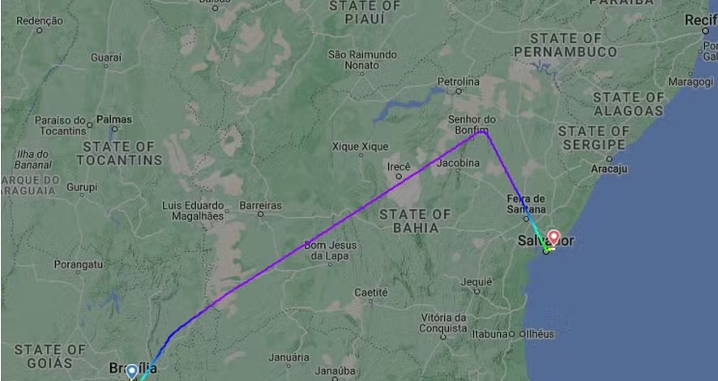

Avião faz pouso de emergência em Salvador após piloto sofrer desmaio a bordo
Voo da Latam decolou de Brasília com destino a João Pessoa nesta terça-feira
Site especializado mostra mudança brusca no trajeto do voo da Latam — Foto: ReproduçãoUm avião da companhia aérea Latam precisou fazer um pouso de emergência em Salvador nesta terça-feira, após o comandante da tripulação desmaiar a bordo.
A aeronave decolou de Brasília com destino a Pessoa , na Paraíba, mas precisou alterar o local de chegada devido a um "mal-estar" do profissional responsável por coordenar a tripulação.
Japão: nova colisão entre dois aviões ocorre em pista de aeroporto
Um avião da Korean Air, com 289 pessoas a bordo, colidiu com uma aeronave estacionada da Cathay Pacific enquanto era rebocado por um veículo terrestre antes da decolagem; o incidente não causou incêndio nem ferimentos, segundo autoridades aeroportuárias
 Aeronave da Korean Air — Foto: Getty Images
Aeronave da Korean Air — Foto: Getty Images
Um avião da Korean Air, com 289 pessoas a bordo, colidiu com uma aeronave estacionada da Cathay Pacific enquanto era rebocado por um veículo terrestre antes da decolagem no Aeroporto de New Chitose, no norte do Japão, nesta terça-feira, 16. O incidente não causou incêndio nem ferimentos, segundo autoridades aeroportuárias e da companhia aérea.
O acidente ocorreu apenas duas semanas após uma colisão entre um avião da Japan Airlines e uma aeronave da guarda costeira em uma pista no Aeroporto de Haneda, em Tóquio, que resultou em um incêndio. Os passageiros tiveram que fugir usando escorregadores de emergência antes que a aeronave maior fosse consumida pelo fogo. Cinco dos seis membros da tripulação na aeronave menor morreram.